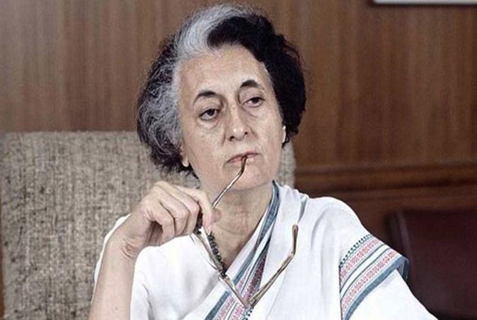

Life
Indira Gandhi was born in 1917. She was the first and only child to Jawaharlal Nehru. She grew up with her father being India’s first Prime Minister. She attended schools in India, Switzerland, and England. Her mother unfortunately died in 1936 in Switzerland from tuberculosis. Her father was imprisoned for some of her childhood because he was a part of the Indian Independence movement before he became the first Prime Minister. In 1942, she married Feroze Gandhi and they had two sons, Rajiv and Sanjay. When her father became India’s first Prime Minister in 1947, Indira started working as his hostess working with diplomatic policies and later became Minister of Information and Broadcasting. She took her father’s position in 1966 after he died, and she became popular with the people quickly by creating a new way for India to be self-sufficient—food grains. This was named the Green Revolution. In 1971 she started to support the Bengali movement to create a new country out of East and West Pakistan. She did this by granting 10 million Pakistani people shelter from the war-zone that was Pakistan. After getting involved in the war, she created Bangladesh. In the election of 1972, Indira was accused of misconduct and was convicted of electoral corruption in 1975. She resigned from her position in 1974 before her conviction. In 1980, she ran again under the party Congress 1 and won for her fourth term of Prime Minister. In 1984, the Golden Temple in Punjab, India, was overrun by Sikh extremists. Indira sent troops into a bloody battle where hundreds were killed. On October 31, 1984, she was assassinated by her “trusted” bodyguards who were seeking revenge.
